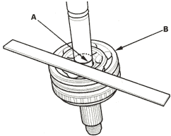
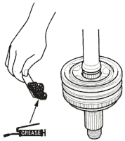
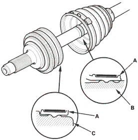
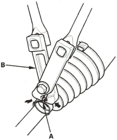

- Check the alignment of the paint mark (A) with the outboard joint end (B).

- Pack the outboard joint with the joint grease included in the new joint boot set.
Grease quantity
Outboard joint:
D14Z6 engine model:
80-100 g (2.8-3.5 oz)
D16V1 engine model:
95-105 g (3.4-3.7 oz)

- Fit the boot (A) ends onto the driveshaft (B) and outboard joint (C).

- Close the ear portion (A) of the band with a commercially available boot band pincers (B).
